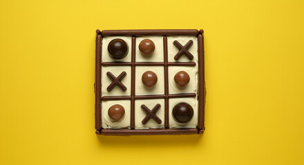

My Projects

Tic-Tac-Toe Web Game
A fun and interactive Tic-Tac-Toe game built using HTML, CSS, and JavaScript. Features include dynamic win detection and a responsive layout.
Technologies: HTML, CSS, JavaScript

Landing Page Website
A modern and responsive landing page designed for businesses and portfolios. It includes smooth scrolling, interactive UI, and animations.
Technologies: HTML, CSS, JavaScript

Stopwatch Web App
A simple yet efficient stopwatch app with start, pause, and reset functionalities. Designed with a sleek UI and smooth transitions.
Technologies: HTML, CSS, JavaScript